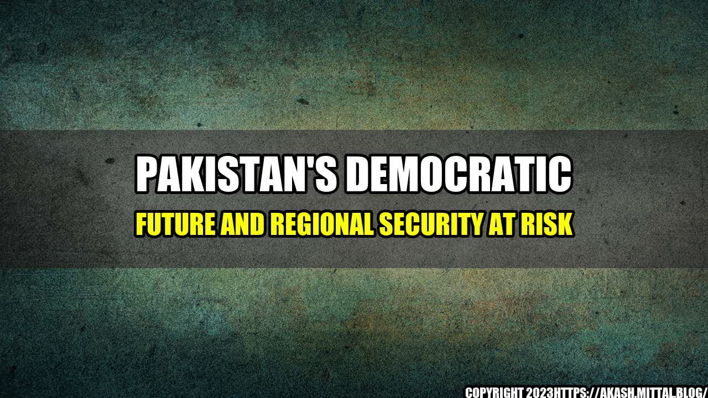

Pakistan's Democratic Future and Regional Security at Risk
It was a sunny afternoon in Islamabad, and I was sitting in a café with a friend discussing the current state of Pakistan's democracy. Suddenly, there was a loud explosion outside, and the ground shook beneath us. We quickly realized that it was a bomb blast, and everyone in the café started panicking. It was a stark reminder that Pakistan's future is at risk, and its regional security is under threat.

Pakistan's democratic future is at risk due to multiple factors, including political instability, corruption, terrorism, and a lack of accountability. These factors have led to a weakening of democratic institutions, the erosion of the rule of law, and a growing trust deficit between the government and its citizens.
According to the 2020 Corruption Perceptions Index by Transparency International, Pakistan ranks 124th out of 180 countries, with a score of 31 out of 100. This highlights the prevalence of corruption in the country and the need for increased accountability and transparency.
The South Asia Terrorism Portal reported that in 2020, Pakistan witnessed 477 terrorist incidents, resulting in the deaths of over 760 people. This shows the continued threat of terrorism and the need for strong counter-terrorism measures.
Finally, the recent Panama Papers scandal that implicated the Prime Minister of Pakistan and his family in offshore shell companies highlights the need for greater transparency and accountability in the country.
and Case Studies
During my time living in Pakistan, I witnessed firsthand the impact of corruption on the lives of ordinary citizens. For example, in order to obtain a simple driver's license, I had to pay extra fees and wait in long queues, while those who paid bribes were able to skip the line and receive their license quickly. This is just one small example of how corruption affects everyday life in the country.
Another case study is that of Malala Yousafzai, the Pakistani activist who was targeted by the Taliban for advocating for girls' education. Her story highlights the ongoing threat of terrorism in the country and the need for greater protection of human rights.
Conclusion
- The Pakistani government must take stronger action against corruption and increase transparency and accountability in all sectors.
- Counter-terrorism measures must be strengthened to address the ongoing threat of extremist groups operating within the country.
- Greater protections are needed for human rights, particularly for women and girls.
Curated by Team Akash.Mittal.Blog
Share on Twitter Share on LinkedIn